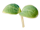
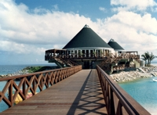

天然木無垢材ソリッドタイプフローリング
原木から製材された無垢材のうち、長さ1,820mm以上の切り出せたものがソリッドタイプ長尺に、節等の存在によってそれだけの長さを取れないものが、ソリッドタイプ短尺やユニタイプ、又は長辺に対する横方向にも繋げてFJLタイプに使用されます。天然木無垢材のソリッドタイプフローリングは、一枚板であるために継ぎ目が無く、木目、手触り、天然素材であるが故の香をお楽しみ頂くには最高の床材です。また、それだけに希少価値も高いと言えます。

{kind=link}
天然木無垢材のフローリングは、アンティーク家具同様に使い込めば使い込む程に風合いを増し、時間の経過とともに味わい深くなっていきます。また、万が一傷が出来た場合でも、研磨塗装を施す事によってほぼ元の状態に戻せるという利点もあります。
その一方で、単層フローリングである無垢材の場合、複合フローリングと違って一般に「暴れ」と言われる含有水分の変化による伸び縮みや歪み・反りの可能性を皆無にする事は出来ません。これは、木が空気中の湿気の吸収や放散を繰り返しているためで、無垢材が「呼吸をする生きた床材」であると言われる所以です。そうした特性をご理解頂いた上での無垢材のご選択をお願い致します。

現在、このタイプのフローリングは以下の樹種からご選択頂けます。
カリン
Narra
リングア
Lingua
マカ
Makha
チーク
Teak
アムギス
Amugis
天然木無垢材ユニタイプフローリング
ソリッドタイプに必要な長さが節等の存在によって確保できない部材は、幅はそのままにより短い板を繋げ合わせる事によってユニタイプとして形成されます。ソリッドタイプとの違いは縦方向の継ぎ目の有無のみという事になりますので、天然無垢材の良さはそのままに、コストを抑えたい場合には最適な選択肢と言えるでしょう。
{kind=link}
{kind=link}
現在、このタイプのフローリングは以下の樹種からご選択頂けます。
コクタン
Ebony
ソノクリン
sonokeling
カリン
Narra
リングア
Lingua
マカ
Makha
チーク
Teak
アムギス
Amugis
ユーゲニア
Eugenia
ラオス檜
LaosHinoki
天然木無垢材FJLタイプフローリング
節等を避けて切り出した小さめの板をフィンガージョイント加工で接合して、一枚のフローリングに形成した集成材で、一般的にFinger Joint Lumberのそれぞれの頭文字をとってFJLと呼んでいます。横方向には2枚から最大7枚の板を接合します。
ユニタイプと比べて、縦方向にも継ぎ目がありますが、天然木無垢材である事に変わりはありません。木材の部位によって木目や色の違いが現れますので、大変バリエーションに富んだ木の表情を楽しむ事が可能です。また、ソリッドタイプやユニタイプと比べて、非常にリーズナブルな価格設定も魅力の一つと言えるでしょう。
{kind=link}
{kind=link}
現在、このタイプのフローリングは以下の樹種からご選択頂けます。
コクタン
Ebony
ソノクリン
sonokeling
カリン
Narra
リングア
Lingua
マカ
Makha
チーク
Teak
アムギス
Amugis
ラオス檜
LaosHinoki
複合フローリング
無垢材が持つ魅力には捨てがたいものがある一方で、施工後の環境要因に左右される「暴れ」の可能性を完全に排除する事は困難です。
従って、特に湿度の変動が激しい場所に適した床材として開発したのが、当社の複合フローリングです。
{kind=link}
{kind=link}
突板（表面や背面）にOWT、アムギス、ナラ、メープルを使った全4種類をご準備、ご希望の色合いに即したものをお選び下さい。台座に使われているファルカタ（産地インドネシアでの別名はセンゴン）は豆科に属し、5〜7年で伐採可能といった様に、成長が著しく早い栽培可能な木材資源でもあるため、森林資源や自然環境への影響は極めて軽微です。
現在、このタイプのフローリングは以下の樹種からご選択頂けます。
ナラ
Oak
アムギス
Amugis
OWT
OWT
天然木無垢デッキ材
港や海上構造物に木材を使う。
今では一般的になったとも言える、暖かみとリゾート感覚に溢れるウッドデッキの使い方を、実は最初に提案したのが当社でした。
例えば沖縄県屈指のリゾートエリアの恩納村にある、ルネッサンスリゾートオキナワ。海上レストランに続くセランガンバツ材の架橋やテラス席のウッドデッキは、海風や波という厳しい環境に晒された4半世紀以上の時間を経た今もなお、その堅牢さを保ったまま利用客の方々の憩いのひとときを演出し続けています。
是非、数多くのリゾートホテルへの納入実績を誇る、当社のチーク製ガーデンファニチャーとあわせてご検討頂き、ライフスタイルや空間利用方法のバリエーションの広がりを存分にお楽しみ下さい。
{kind=link}
{kind=link}
現在、このタイプのフローリングは以下の樹種からご選択頂けます。
ギアム
Giam
マラス
Malas
フローリングの硬さ
多数の人が土足で歩く飲食店や公共施設、または移動式の家具が設置された場所等にはより硬い木材が適していますが、硬度が低い木材には逆に柔軟性が備わっているため人体への負担がより小さいと言えます。ご利用になるシーンや施工場所の用途に適した木材の選択のために、硬さを一つの目安としてご利用下さい。
{kind=link}
上記のグラフは、曲げ、圧縮、剪断に対する強さの数値をポイント化し、それぞれに同じ重みを持たせて合計した順序に、実際のフローリングへの傷の付きやすさも考慮して、弊社で独自に集計したものです。第三者公的機関等による測定結果ではありません。
※ポイントが高いものほど、硬く傷が付きにくいと言えます。
塗装と無塗装
JASによってフローリング製品の厚み誤差範囲は±0.3mm以内と定められていますが、下地や根太等の施工場所特有の環境要因によっては、段差が発生する事も有り得ます。無塗装のフローリングは、施工後に塗装を施す事が可能ですので、手に触れる事によって初めて解る様な、施工時に発覚した僅かな段差や隙間を、研磨する事によって無くす事も出来ます。また、実際に施工場所に設置した後に、色を決定できるという利点もあります。
最近では、チーク等の無塗装フローリングを塗装せずに使う事によって、木が本来持っている風合いやその経年変化を楽しむ方も増えています。
直張りのメリット
直張りのフローリングは、根太（ねた）材や捨張（すてばり）を使わずに施工が可能ですので、天井と床の距離をより大きく取れるため、結果として室内の空間を広くする効果があります。また工事の工程を減らす事によるコスト削減というメリットも忘れてはならないでしょう。と同時に、コンクリートやパネル等の下地の凹凸等の影響を直接反映する事になりますので、しっかりとした下地施工が前提になります。
遮音性能
集合住宅では階下の家庭への音の配慮が大変重要です。
サイズ
当社のフローリングは下記のサイズからお選び頂けます。☆印がついているものは、最も一般的な普及タイプです。サイズによって在庫量が異なりますので、詳しくは当社営業までお問い合わせ下さい。
長さ: 606, 909, 1800, 1820☆, 1950
幅: 65, 75, 90☆, 110, 120, 150☆
厚み: 15☆, 18
※☆があるものが、一般的な普及サイズです。
※経験豊富な当社プランナーが、お客様のご利用シーンや環境要因等を考慮して最適な提案をさせて頂きます。素材のご決定に際しては、是非お気軽にご相談下さいませ。